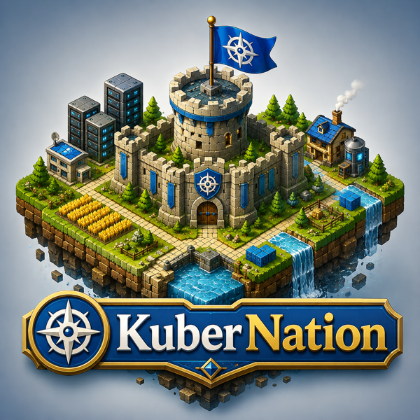

Your Kubernetes cluster as an explorable world map.
Instead of scrolling tables of pods and nodes, you look at a map. Each node is a patch of terrain coloured by its health, each workload is a city sited on the node its pods run on, and the problems that need you surface in a queue — the next thing needing your attention — rather than buried in dashboards.